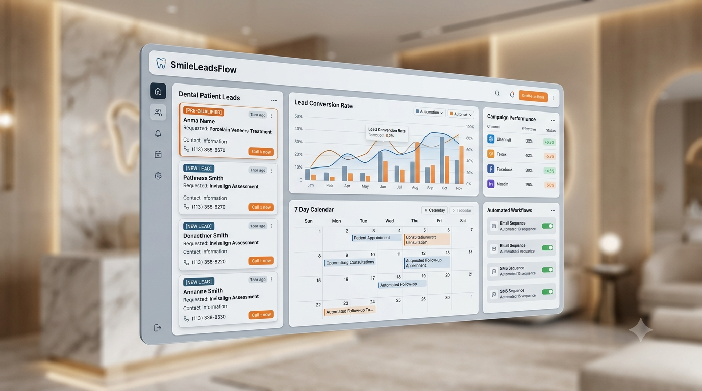

No implementamos anuncios masivos ni marketing tradicional. Construimos infraestructura automatizada de filtrado e ingeniería de conversión para clínicas dentales enfocadas en tratamientos de alta gama.

Cada minuto que tu equipo dedica a responder solicitudes informales de personas que buscan consultas económicas, es un minuto donde se ignora a tu próximo paciente de rehabilitación estética completa.
La bandeja de entrada colapsa con usuarios preguntando '¿Precio?' o '¿Dónde están ubicados?', absorbiendo horas valiosas de tu personal operativo.
Mientras tu recepcionista responde un mensaje automatizado sobre limpiezas, el paciente dispuesto a invertir en carillas de porcelana se cansa de esperar y agenda con tu competencia.
Citas agendadas de forma manual que no asisten debido a la ausencia de un flujo de confirmación automatizado, destruyendo la rentabilidad de la hora-sillón.
El ecosistema tradicional de agencias abarata la reputación de tu clínica ofreciendo limpiezas gratis en lugar de posicionar el valor estético real.
Cualificación automatizada de presupuestos antes de agendar.
Sincronización instantánea con Google Calendar bidireccional.
Filtro inteligente para descartar solicitudes de limpiezas y caries simples.
Respuestas instantáneas 24/7 a preguntas frecuentes operativas (Ubicación, Horarios).
Secuencia hiper-personalizada de recordatorios vía WhatsApp.
Alertas push en tiempo real para el asistente asignado de la clínica.
Nota de arquitectura ética: El sistema de inteligencia y automatización está programado de forma restrictiva. Bajo ninguna circunstancia emite opiniones o diagnósticos de carácter médico; su función única es logística, operativa y de cualificación comercial.
Alineamos la agenda para asegurar que los bloques horarios estén ocupados por tratamientos de alto valor.
El personal de tu recepción se enfoca en brindar una experiencia de lujo a los pacientes presentes en la clínica.
Transformamos la captación de pacientes en un proceso basado en datos medibles y estables.
Aprendí a diseñar sistemas de eficiencia en la economía real, donde un error logístico cuesta dinero de forma inmediata. Desde la coordinación operativa en la compra y venta de limón, pasando por la gestión de maquinaria pesada y la conducción de camiones tortón. En esos entornos, si el flujo de trabajo no es exacto, los márgenes desaparecen.
Esa obsesión por la precisión operativa me llevó de forma natural al desarrollo web y la arquitectura de software. Descubrí que las agencias tradicionales de marketing digital suelen entregar clics y leads de baja calidad, delegando toda la carga del filtrado al personal de recepción de la clínica.
Hoy aplico esa misma mentalidad sistémica para explicar e instalar la adquisición automatizada de clínicas de estética dental premium. No vendo ideas creativas ni conceptos abstractos; instalo sistemas que funcionan de manera predecible.
Sesión inicial de 30 mins
Análisis de canales activos
Integración de flujos y API
Automatización activa en producción
Las agencias tradicionales configuran campañas para maximizar el volumen de mensajes recibidos. Nuestro sistema se enfoca en el filtrado preventivo: instalamos un embudo automatizado intermedio que pre-cualifica al usuario por nivel de presupuesto e interés real antes de permitirle agendar.
Porque el tiempo de respuesta óptimo en internet es de menos de 5 minutos. Si tu asistente está atendiendo a un paciente en la recepción o procesando un cobro, no puede responder al instante. El sistema asegura atención inmediata 24/7 sin descuidar el trato presencial.
No. El sistema está programado para resolver únicamente dudas logísticas y operativas (precios estimados de entrada, agendas, horarios, ubicación). Cualquier consulta clínica es derivada directamente al especialista en la clínica.
Una vez completado el diagnóstico estratégico y validado el acceso a los canales, la infraestructura queda totalmente instalada y en producción en un período estimado de 14 días hábiles.
Agenda una sesión de diagnóstico estratégico de 30 minutos sin costo para analizar los canales operativos de tu clínica y determinar si califica para la implementación del sistema.